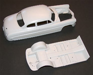

|

Moebius 1/25 1953 Hudson Hornet
Kit #1200 MSRP $28.99 Market Value in 2012 = $22.90
Images and text Copyright © 2012, 2015 by Matt Swan
Developmental Background
During the Second World War design and development of new civilian cars and trucks was at a near complete standstill. Once the war ended and resources could be devoted to these tasks is still took a couple years before things started to trickle down to the market. The Hudson Motor company had been producing fine quality automobiles since about 1910 thru the 1941 model year when factory resources were converted to the war effort. The 1947/8 model year Commodore introduced a 'step-down' which combined a uni-body floor pan structure with a recessed frame. The result was not only a safer car and greater passenger comfort as well, but, through a lower center of gravity, an extremely well-handling car.
By the 1951 model year Hudson had introduced a high torque straight six engine that became a mainstay in the fledging NASCAR racing circuit as the Hudson Hornet. Streamlining, low center of gravity and excellent power to weight ratios allowed the Hornet to set racing standards that still stand even by today's performance levels. The high torque racing engine (available as an add-on from the stock version) was developed by Marshall Teague and Hudson engineer Vince Piggins. It had a bigger bore, bigger valves, relieved and polished combustion chambers, high compression head, high performance cam, split dual exhausts, and "Twin H-Power" carburetors and manifold. This combination boosted the big straight 6 up to 220 gross horsepower, a jump of 75 horses over the showroom stock figure of 145. The Hornet performed well on both dirt and paved tracks and continued to set top speed records for its class well into the 1960s. Unfortunately those design characteristics that made the car so strong and successful also lead to its undoing. The step-down body shell was not conductive to easy model changes and during the four years of Hornet production the only real changes in the car were minor cosmetic differences with the hood and grill. Soon Hudson found themselves unable to effectively compete with the big three auto makers and were acquired by Nash-Kelvinator in 1954 to become American Motors. From 1954 thru 1957 Hudsons were still produced on a common frame with the Nash but the magic was gone.
The Kit
The kit arrives in a typical two part box similar to the classic Monogram automotive kit box manufactured from lite grade cardboard and suitable for your average stash storage needs. The box art is a colorful depiction of days gone by with the car parked at the gas pump having the windshield carefully cleaned by the attendant. Not many of us can remember that ever happening. Inside the box we have a nice collection of high pressure injection molded pieces in both light tan polystyrene and chrome plated plastic. The primary body shell and chassis pan are bagged separately from everything else to prevent any casual scratching or damage during shipping. The body appears to be the result of slide-mold injection with extremely fine mold separation seams – stuff that is really hard to spot so kudos on that score. Something a little different with this kit verse your typical car kit is the separate frame rail assembly which the floor pan will attach to. This piece test fits very well to the body shell and will provide a whole new level of depth detail to the model.
One entire tree of parts is dedicated to the engine. Here we have very nice surface detail especially across the head and the upper sides of the block. About the only pieces a modeler could hope to add in here are some ignition wires and battery cables to complete the area under the hood. The undercarriage has a great level of detail with complete suspension and drive train however the front wheels can only be built in a front facing fixed position, I would have liked them to be positionable. Passenger cabin; all I can say here is "Yummy!" We've got excellent surface detail, great looking dash, grab handles for the rear seat passengers and even a well detailed cabin heater slung under the dash. The exterior of the model is just as attractive as the interior with plenty of shiny chrome parts and nice white wall vinyl tires to finish it off.
Now let's take a quick inventory of what the box contains: we have five sprues of light tan parts with a couple large individual pieces totaling 91 pieces. We have two sprues of chromed parts for 23 pieces, 2 clear red parts and 10 clear parts. Lastly there are four white wall tires and a single metal rear axle giving us a grand total of 131 pieces to this kit.

You may click on these small images to view larger pictures
Decals and Instructions
Kit instructions are presented to us as a full color three panel fold-out. It opens with a set of general model building tips seven nicely detailed exploded view assembly steps that include a variety of construction notes to aid the modeler. We get four full color sub-panels showing typical interior and exterior colors along with an excellent color view of the engine and drive train.
We get a small sheet of decals that includes individual instrument faces, various logos and placards and a license plate image. You even get a nice little radio face for the dash, what more could you ask for? You can see them here.
Conclusions
I don't do a lot of car reviews and only build a very limited number of car related kits so when I say this is a great kit you should pay attention. Moebius Models has already made their mark by bringing back to life many of the old AMT/ERTL Sci-Fi and horror kits but their limited forays into new mold productions is simply cementing their place as a lead manufacture of niche market kits. This is a well-engineered kit that looks great with an excellent level of detail. Instructions are well above the quality of just about anything else on the market at this time. General parts fit looks to be great and subject matter is something the industry had previously overlooked. Are you a car modeler? Yes? Then you best pick one or two of these up - you will not be disappointed.
Construction
08/31/2015
Jimmy Flintsone. If you are a car modeler then you know exactly who that is, if you are not then you may think I am making an obscure reference to a Saturday morning cartoon series - I am not. Jimmy Flintstone Studios designs and produces a wide range of excellent resin scale automobile body conversion along with a few other interesting model details. Not long after the Moebius release of the Hudson Hornet they had two conversion sets ready to go; a salt flat custom racer and this nifty Hudson shop truck that was often seen as a flower delivery vehicle for the funeral industry. It was not unusual back in the day to see these traveling within a funeral procession loaded with flower displays for the service. For me, while I always thought the Hudson Hornet was an awesome looking car I just was not feeling the drive to build the kit, at least until I saw this conversion.
The intent with this conversion is that it would be a direct drop on replacement for the kit body and use the kit hood and exterior detail pieces. What could be simpler than that? As with most things in life it is not that simple, close but not quite. The exterior surface of this piece is simply amazing, the textural feel is smooth as glass and the details seem spot on. I think you can only achieve this level of quality if you truly love cars and for this conversion that love shows. Underneath is not quite so pretty. Note in the image above inside the engine compartment there is a section of flash attached to the bottom of the inner fender well, this needs to be removed from both sides and trimmed to fit the kit frame. There is a fine skin of flash across all the window and light openings but this is easily removed and cleaned up. The rear body shell needs thinning and the front frame locations need cleaned up and deepened to allow the frame to seat properly. Even so about 2mm of the front kit frame needs to be shaved off. The kit under-body has to have the upper sections of the rear inner fender wells removed and they do not seem to line up well with the resin fender wells. Hopefully a little sanding in there will help the fit.
|


{kind=link}
{kind=link}
{kind=link}
{kind=link}
{kind=link}
{kind=link}
{kind=link}
{kind=link}
{kind=link}
{kind=link}
{kind=link}